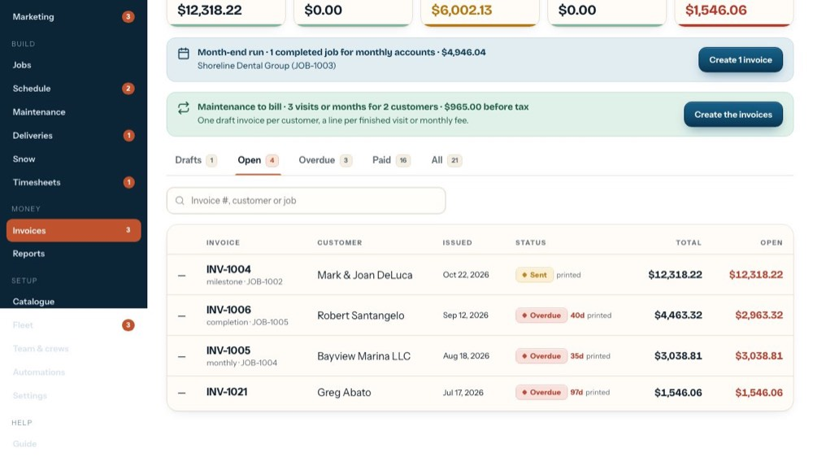
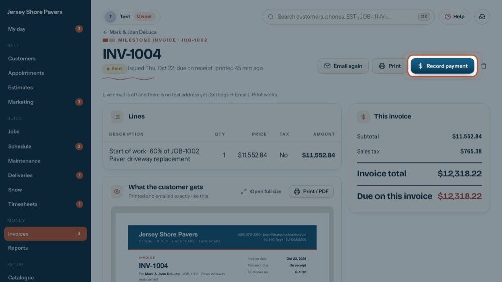
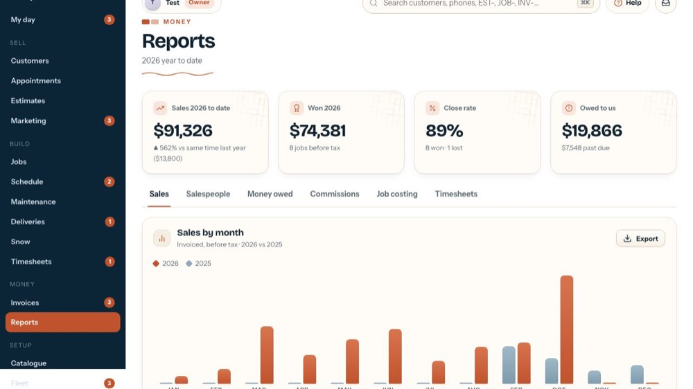
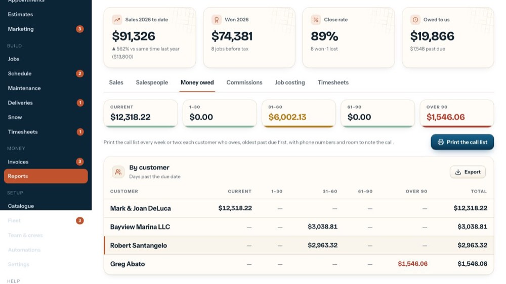

Invoice, record a payment, chase what's owed
In the office app, press Help and type invoice, record a payment, chase what's owed
: the tour plays on your own screen, with your own data.
-

1Open an invoice
Invoices come from the job: a payment-schedule step, the balance, or a change order.
-

2Record a payment
Check, cash, ACH or card. A card payment adds the card fee as its own line; the job's balance updates.
-

3Who owes what
Open invoices by customer and by age: 0–30, 31–60, 61–90, 90+.
-

4The call list
Print it every couple of weeks for the office to call.